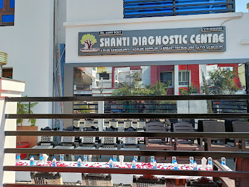
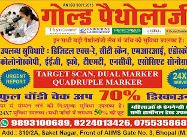
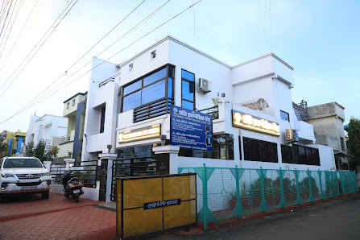

01
Ultrasound & Sonography
Safe, real-time imaging for pregnancy monitoring, abdominal organs, pelvic scans, and vascular assessment — performed by Dr. Ashu Dixit.
Awadhpuri, Bhopal · Est. 2018
Ultrasound · Sonography · Digital X-Ray · Pathology
Sai Aadharashila, Awadhpuri — Open Mon–Sat 9am–7pm

Safe, real-time imaging for pregnancy monitoring, abdominal organs, pelvic scans, and vascular assessment — performed by Dr. Ashu Dixit.
Advanced vascular imaging to evaluate blood flow in arteries and veins — essential for DVT, carotid, and renal assessments.
Low-dose digital radiography for bone, chest, and joint studies — instant digital results with minimal radiation exposure.
Resting ECG and Treadmill Stress Test for cardiac evaluation — quick, comfortable, and report-ready the same day.
Complete blood panels, lipid profiles, thyroid, liver & kidney function tests, and health checkup packages.
Walk-in welcome. Priority slots available for advance booking.
Schedule Now →

Dr. Ashu Dixit leads Shanti Diagnostic Centre with a commitment to accurate sonography and diagnostics — every scan is personally reviewed, every report is delivered on time.
★★★★★"Dr. Ashu Dixit is very thorough with the sonography. He explained everything during the scan and the report was ready in an hour. Highly recommended."
★★★★★"Clean clinic and friendly staff. Got my wife's pregnancy ultrasound done here — the 3D images were beautiful and the doctor was very reassuring."
★★★★★"I've been coming here for over 3 years. The quality of the sonography equipment is top-notch and Dr. Ashu Dixit's expertise is evident in every scan. The full body checkup package is excellent value — detailed reports with clear explanations. Best diagnostic centre in Awadhpuri without a doubt."
★★★★★"Needed an urgent X-ray for my father. They accommodated us immediately without any wait. The digital X-ray was quick and Dr. personally reviewed the results. Excellent service."
H. No. 394, Sai Aadharashila,
front of Sai Mandir, Awadhpuri,
Bhopal, Madhya Pradesh 462022
Monday – Saturday: 9:00 AM – 7:00 PM
Sunday: 9:00 AM – 1:00 PM